vos projets, nos talents.
Noir · Blanc
vos projets, nos talents.
Gris · Blanc
vos projets, nos talents.
Lime gradient · Noir
vos projets, nos talents.
Off-white · Noir
Source : Charte graphique VIV 2025 — Logo vertical + baseline « vos projets, nos talents. »